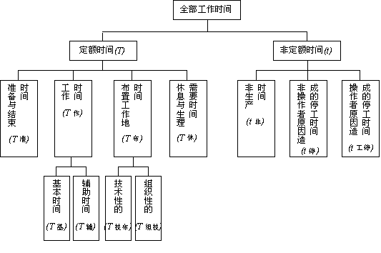

1 . 教学安排
2 . 作业测定的概念及作用
3 . 作业测定的应用
4 . 作业测定的方法及特点
5 . 工时消耗分类及标准时间的构成
 工时消耗分类
工时消耗分类
传统工时的计算
标准时间
工时定额
6 . 思考与练习题
 返回课程学习首页
返回课程学习首页
工时消耗分类
工人在生产中的工时消耗，可分为定额时间和非定额时间两大部分，其构成情况如图8-1所示。

图8-1 工时消耗分类图
(一)定额时间
定额时间是指在正常的生产技术条件下，工人为完成一定量的工作所消耗的时间。它由 以下四部分组成：
1．作业时间
直接用于生产产品，完成工序中各类操作所消耗的时间。按其作用不同又分为两种：其一，基本作业时间，用于实现基本操作，直接作用于劳动对象并改变劳动对象的尺寸、形状、性质、组合、外表等所消耗的时间，它又可分为机动的基本时间、机手并动的基本时间、手动基本时间等三种；其二，辅助作业时间，是指工人为保证完成基本工艺而执行的各种辅助动作所消耗的时间。
2．布置工作地时间
它指工人在工作中用于照看和保持工作地的正常状态所消耗的时间。根据其不同性质，又分为两种：其一，组织性布置工作地时间，是用于轮班开始与终了时的准备和结束工作，以及交接班工作所消耗的工时；其二，技术性布置工作地时间，是指由于技术上的需要，为维持技术装备的正常运转而用于照看工作地的时间。
3．休息和生理所需时间
工人在轮班中用以恢复体力、视力和生理上的需要所消耗的时间。
4．准备与结束时间
工人班前和班后用于准备和结束工作所消耗的时间。
(二)非定额时间
它是指一个工作班内因停工而损失的时间，或执行非生产性工作所消耗的时间。非定额时间是不必要的时间消耗，以往并未计入工时定额。它包括两种：
1．停工时间
工人在工作中因某种原因未能从事生产活动损失的时间。其中分为：第一，因操作者旷工、迟到、早退、离岗等因素所造成的停工；第二，因停电、停工待料、停工开会等非操作者原因所造成的停工。
2．非生产工作时间
工人在班内做了生产以外的或不必要的工作所损失的时间。它分为：第一，由于管理不善而导致的时间损失：第二，因工人的废品工时与返修工时所造成的时间损失。
常见的工时消耗见表8-2。其中，工时消耗项目及编号，企业可根据情况自行编定。
表8-2 常见的工时消耗分类表
|
工时分类 |
代号 |
工时消耗项目 |
编号 |
|
|
准备结束时间 |
T准 |
领取工票 熟悉图样和工艺 检查材料和毛坯 检查工具、领取专用夹具 安装和调整专用工夹具 调整机床或设备 首件及成批交检 结束工作 |
1 2 3 4 5 6 7 8 |
|
|
作业时间 |
基本时间 |
T基 |
机动作业 机手并动作业 手动作业 |
9 10 11 |
|
辅助时间 |
T辅 |
装卸零件 测量工件 操纵设备或工具 调整设备工作参数 |
12 13 14 15 |
|
|
布置工作地时间 |
组织性布置工作地时间 |
T组布 |
更换工作服 擦拭及润滑设备 放置工具及毛坯 清扫和整理工作地 填写原始记录 交接班 生产中不可避免的短时间延误 |
16 17 18 19 20 21 22 |
|
技术性布置工作地时间 |
T技布 |
更换及磨用钝的工具 操作中校正工具及调整设备 清除切屑 |
23 24 25 |
|
|
休息和生理需要时间 |
T休 |
必要的休息时间 生理需要时间 |
26 27 |
|
|
非生产时间 |
t非 |
寻找图样及工艺卡 寻找工夹具 寻找材料和毛坯 进行其他本职以外的工作 |
28 29 30 31 |
|
|
非操作者原因造成的停工 |
t停 |
等待工作 等待图样和工艺 等待材料和毛坯 等待吊车和运输工具 等待工夹具 等待动力 等待修理 |
32 33 34 35 36 37 38 |
|
|
操作者原因造成的停工 |
t工停 |
迟到、早退 擅离工作地 闲谈 |
39 40 41 |
|